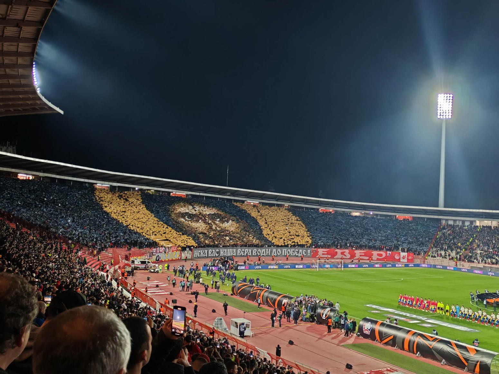

Biti Delija ne znači samo navijati za Crvenu zvezdu, nego to predstavlja način života i pripadnost jednoj velikoj grupi ljudi koja stoji iza svog kluba bez obzira na rezultat. Delije su poznate po tome da nikada ne ostavljaju klub sam, bilo da se igra važna utakmica u Evropi ili običan meč u domaćem prvenstvu. Navijanje na stadionu nije samo pjevanje, nego zajedništvo, energija i osjećaj pripadnosti. Za mnoge, biti Delija znači biti uz klub i kada pobjeđuje i kada gubi, poštovati tradiciju i nositi crveno-bijele boje sa ponosom. To je i druženje, putovanja na utakmice i stvaranje posebne atmosfere koja se ne može opisati, već samo doživjeti. Delije su poznate i po tome što pomažu kada je to potrebno, kroz humanitarne akcije i podršku ljudima kojima je pomoć potrebna. Zato se često kaže da Delije nisu samo navijači, nego i zajednica.